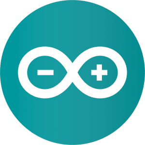

Minor IoT
SRP >
Opdracht:
Maak een eigen digitale dobbelstenen waar een drankspel mee gespeeld kan worden.
Geleerd:
- Arduino
- PHPMyAdmin
- PHP
- HTML5
 CSS3
CSS3 JavaScript
JavaScript
Beschrijving:
In mijn derde jaar heb ik de minor Internet of Things gevolgd. Het Internet of Things bestaat uit fysieke voorwerpen die met het internet verbonden zijn en zo gegevens met elkaar uitwisselen.
Tijdens mijn opdracht heb ik gebruik gemaakt van een WeMos D1. Dit is een micro controller (mini computer), dat gebruik maakt van WiFi. Ook heb ik twee input sensoren en twee output sensoren gebruikt.
Mijn digital dice kan gebruikt worden tijdens een drankspel. Een persoon start met de dice in zijn handen. Door op de knop te drukken, wordt de dice gerold. De dice vertelt de gebruiker wat hij moet doen:
- Gooi 1: geef de dice aan de persoon rechts.
- Gooi 6: de dice gaat naar de persoon links.
- Als de gebruiker 2 gooit, moet hij een shotje nemen.

Output sensoren
Mijn digital dice bevat een LED matrix, die de dice rolls en hun betekenissen weergeven. Wanneer de gebruiker 2 gooit, brandt de rode LED. Alle andere dice rolls laten de groene LED branden.
Input sensoren
De push button functioneert als input sensor. Ook heb ik een lichtgevoelige weerstand (Light Dependent Resistor = LDR) sensor gebruikt. De sensor meet hoeveel licht er is. Hoe donkerder het is, hoe harder de rode of de groene LED gaat branden.
Database
De dice rolls worden via d.m.v. WiFi en mijn php code opgeslagen in mijn eigen database. Dit wordt mogelijk gemaakt door mijn WeMos die is verbonden met het internet. De data uit mijn database wordt gesorteerd op tijd, zodat mijn php document de laatste zes dice rolls selecteert en laat zien op mijn website.
Digital dice game
Wanneer alles werkt, ziet mijn digital dice game er dus zo uit.
Bekijk documentatie